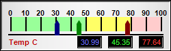

This example demonstrates a horizontal linear meter with multiple pointers.
ChartDirector 7.1 (C++ Edition)
Multi-Pointer Horizontal Meter

Source Code Listing
#include "chartdir.h"
int main(int argc, char *argv[])
{
// The values to display on the meter
double value0 = 30.99;
double value1 = 45.35;
double value2 = 77.64;
// Create an LinearMeter object of size 250 x 75 pixels, using silver background with a 2 pixel
// black 3D depressed border.
LinearMeter* m = new LinearMeter(250, 75, Chart::silverColor(), 0, -2);
// Set the scale region top-left corner at (15, 25), with size of 220 x 20 pixels. The scale
// labels are located on the top (implies horizontal meter)
m->setMeter(15, 25, 220, 20, Chart::Top);
// Set meter scale from 0 - 100, with a tick every 10 units
m->setScale(0, 100, 10);
// Set 0 - 50 as green (99ff99) zone, 50 - 80 as yellow (ffff66) zone, and 80 - 100 as red
// (ffcccc) zone
m->addZone(0, 50, 0x99ff99);
m->addZone(50, 80, 0xffff66);
m->addZone(80, 100, 0xffcccc);
// Add deep red (000080), deep green (008000) and deep blue (800000) pointers to reflect the
// values
m->addPointer(value0, 0x000080);
m->addPointer(value1, 0x008000);
m->addPointer(value2, 0x800000);
// Add a label at bottom-left (10, 68) using Arial Bold/8pt/red (c00000)
m->addText(10, 68, "Temp C", "Arial Bold", 8, 0xc00000, Chart::BottomLeft);
// Add three text boxes to show the values in this meter
m->addText(148, 70, m->formatValue(value0, "2"), "Arial", 8, 0x6666ff, Chart::BottomRight
)->setBackground(0, 0, -1);
m->addText(193, 70, m->formatValue(value1, "2"), "Arial", 8, 0x33ff33, Chart::BottomRight
)->setBackground(0, 0, -1);
m->addText(238, 70, m->formatValue(value2, "2"), "Arial", 8, 0xff3333, Chart::BottomRight
)->setBackground(0, 0, -1);
// Output the chart
m->makeChart("multihmeter.png");
//free up resources
delete m;
return 0;
}